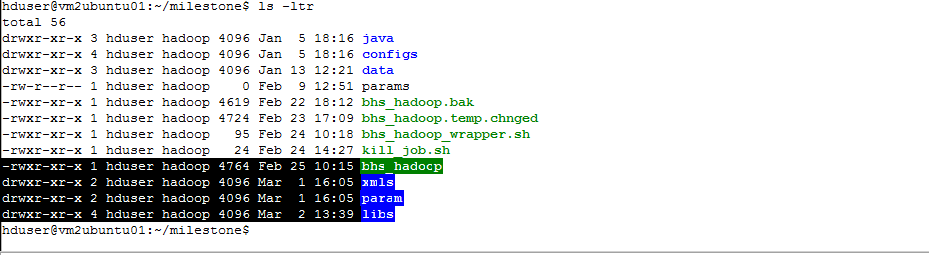
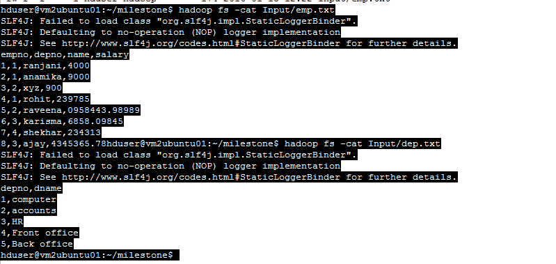
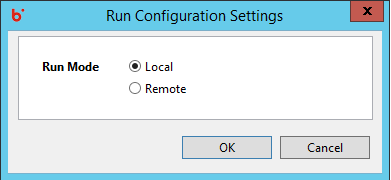
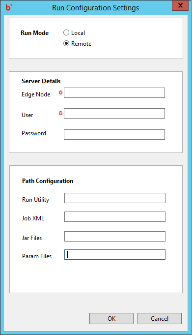
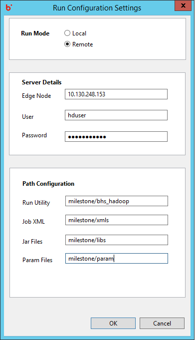
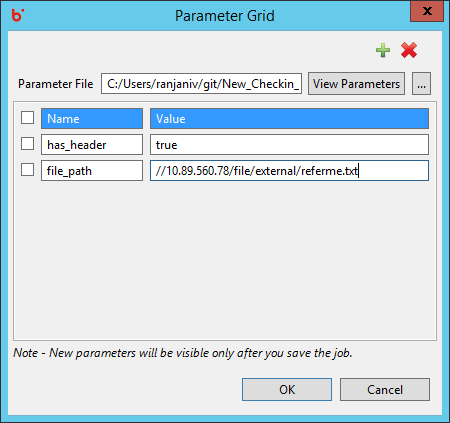
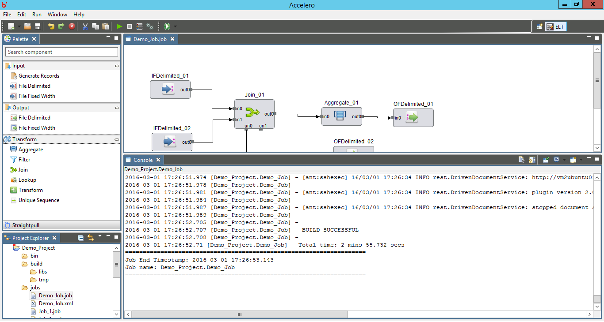

Hydrograph Help
Hydrograph Help
How to Run a Job on Cluster
Hydrograph Release Version 1.0
To Run a job on cluster, make sure that you have a working job. Check whether the bhs_hadoop utility is present at the location you wish to run the job on cluster. The bhs_hadoop utility is used to run the job on Hydrograph UI. It communicates with the Hydrograph Engine and returns appropriate values for the job to run successfully on the UI. Also, folders to save jars, XML's and parameter files must be present here

Move the Input files that are required by your job to appropriate folder on the cluster

Click on Run button or press Ctr+R, it opens a grid requesting user to either seelct Local or Remote Run. Select Remote Run option

Remote expands the window, user is required to pass the edge node server details, username, password and the location where his utility is present. Along with this he will also require to provide folder locations where the Job XML, param files and Jars will be moved for the utility to pick and run.


Click on Ok. Provide parameter values if any in the parameter grid and click OK.

Watch Job Run log in the console and wait for the build to complete successfully.
